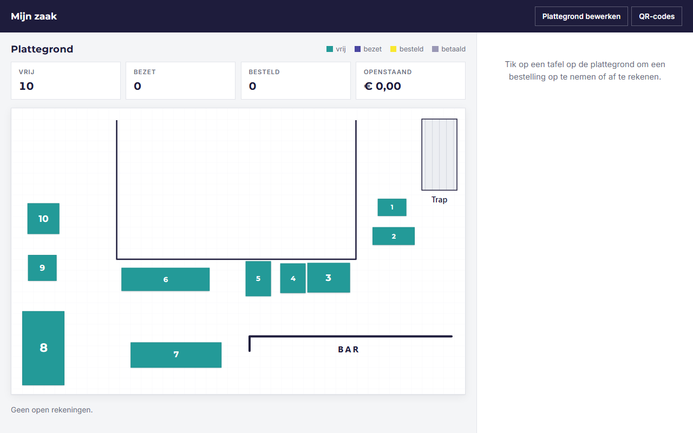
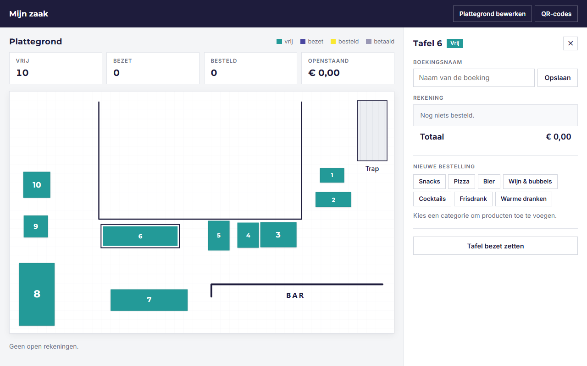

Tafelbestelling-app voor The Park Playground
Een tablet-app waarmee de hosts bestellingen opnemen aan tafel, die meteen in de kassa terechtkomen.
- Opdrachtgever: The Park Playground
- Periode: 2025 - 2026
- Technologie: Node.js, HTML, CSS en JavaScript
Over het project
Op drukke momenten moesten bezoekers aanschuiven aan de bar. Met deze app kiest een host een tafel op een plattegrond, vult de boekingsnaam in en neemt de bestelling op. Die gaat rechtstreeks naar de kassa (Epos Now). Gasten kunnen via een QR-code op hun tafel zelf hun naam invullen.
Live: tafelbestellingen.onrender.com (inloggen met pincode personeel).
Evolutie van het project
- Probleem: wachtrijen aan de bar op drukke momenten.
- Eerste versie: een plattegrond waarop je een tafel kiest en een bestelling opneemt.
- Kassakoppeling: bestellingen gaan via de API van Epos Now meteen naar de kassa.
- QR-codes: per tafel een QR-code voor de gasten.
- Online: gehost op Render, zodat er geen laptop meer moet aanstaan.
Screenshots

